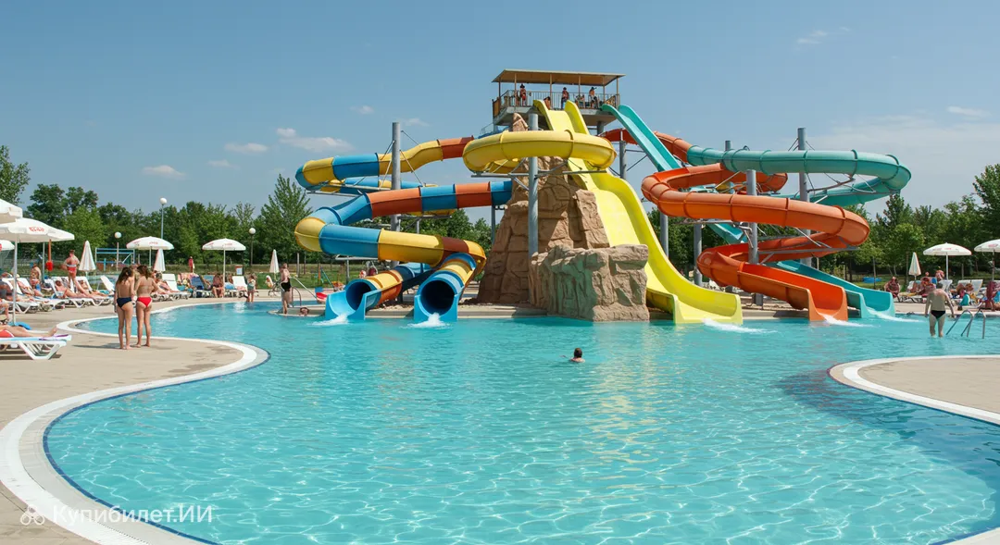

О городе Бельцы

Бельцы, которые часто называют «северной столицей» Молдовы, — крупнейший экономический и культурный центр северного региона страны. Первое документальное упоминание относится к 1421 году, а официальный статус города получен в 1818 году после визита императора Александра I.
Город удобно расположен на реке Реут в 138 км от Кишинёва. Сегодня здесь проживает более ста тысяч человек, представляющих десятки национальностей, что создаёт уникальную мультикультурную атмосферу.
История города
В 1779 году по приглашению турецкого паши в Бельцах поселились еврейские купцы. В 1812 году Бессарабия перешла под российскую юрисдикцию, а в 1818 году Бельцы были назначены уездным городом Ясского уезда.
В 1818 году Бельцы посетил император Александр I. Считается, что во время визита он получил известие о рождении племянника и в честь этого события присвоил Бельцам статус города.
Расположенный на перекрёстке дорог (связывал Черновцы, Хотин, Сороки с Кишинёвом и Измаилом), город постепенно стал значительным торговым центром Бессарабии. Главным предметом торговли был скот.
Интересные факты
- Бельцы — один из старейших городов Молдовы (первое упоминание в 1421 г.).
- Центральная площадь считается одной из крупнейших пешеходных зон в Европе.
- Национальный театр Василе Александри — первый в СССР, построенный специально для национального театра.
- В 2026 году Бельцы получили статус «Молодёжной столицы Молдовы».
- В городе работает Государственный университет Алеку Руссо.
- Бельцы — важный транспортный узел для поездок по Северной Молдове.